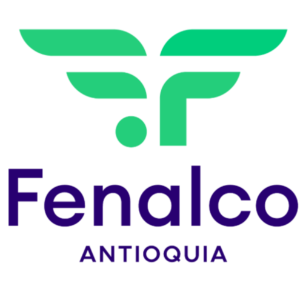

Directora Ejecutiva
María José
Bernal Gaviria
Fenalco Antioquia · Medellín, Colombia
Líder gremial con amplia trayectoria en el sector comercial colombiano.
Directora Ejecutiva
Fenalco Antioquia · Medellín, Colombia
Líder gremial con amplia trayectoria en el sector comercial colombiano.
Directora Ejecutiva de Fenalco Antioquia, con una carrera construida en el ámbito gremial y empresarial colombiano. Ha liderado iniciativas de alto impacto que articulan el sector privado con las políticas públicas, generando entornos de negocios más competitivos y sostenibles.
Su gestión se distingue por construir alianzas estratégicas, defender los intereses del comercio ante el Gobierno y promover la innovación como motor del desarrollo regional en Antioquia.
Representación y defensa activa de los intereses del sector comercial colombiano.
Impulso de políticas y programas que fortalecen la competitividad empresarial regional.
Construcción de puentes entre el sector privado, gobierno y academia.
Promoción de la transformación digital y nuevas tendencias del comercio moderno.

Desde 1945
Federación Nacional de Comerciantes
Fenalco — Federación Nacional de Comerciantes — es la agremiación privada más representativa del sector comercial en Colombia. Fundada en 1945, agrupa a más de 10.000 empresas de todo el país, desde grandes cadenas hasta pequeños comerciantes, defendiendo sus intereses ante el Gobierno, el Congreso y los organismos internacionales.
Con presencia en los 32 departamentos del país, Fenalco promueve la formalización empresarial, la innovación en el comercio, la capacitación del talento humano y el desarrollo de políticas públicas que favorezcan la libre empresa y la competitividad del sector.
Liderazgo de la organización gremial más representativa del comercio antioqueño, articulando agenda pública, programas de formación y representación empresarial a nivel regional y nacional.
Posicionamiento de Antioquia como referente en política comercial nacional, liderando mesas de diálogo con el gobierno departamental y municipal para la simplificación de trámites empresariales.
Impulso de programas de capacitación y acompañamiento para la adopción de herramientas digitales en el sector comercio minorista y mayorista de Antioquia.
Participación activa como vocera del sector comercial en medios de comunicación nacionales y regionales, posicionando la agenda del comercio colombiano en el debate público.
Desarrollo de programas de capacitación empresarial que han impactado a miles de comerciantes y emprendedores en la región antioqueña, promoviendo la formalización y el crecimiento sostenible.